孖仔帮与您分享双胞胎育儿经
点击蓝字
关注我们
文|圆圈妈，一个文思如尿崩的双胎妈妈
★ 前言 ★
亲子阅读正在被越来越多的年轻父母认可，普遍认同阅读对孩子的价值，并甘之如饴地陪伴孩子一起亲子阅读，而我对圆圈兄弟的早期教育就是从亲子阅读开始的。
前几天跟孖仔帮喂养群一宝妈聊起双胞胎亲子阅读这个话题，感触良多。其实已经有好几位宝妈跟我谈起双胞胎亲子阅读的苦恼了。
只因双胞胎孩子太特别了，不管做什么都容易相互干扰，而一起亲子阅读问题似乎更加突出些。
一直很想写关于双胞胎教育的话题，在养育圆圈兄弟的3年来，除了起码的温饱问题，我对他们哥俩的教育也非常重视。
为此，我还特地在知乎申请了专栏《双胞胎孩子的非常教育》希望能抛砖引玉，引起更多双胞胎家庭的重视，从而一起探讨双胞胎孩子的非常教育这个世界未解之谜！
双胞胎孩子是一个特殊的群体，可值得借鉴的经验很少，我也是一路摸着石头过河慢慢探索。期间有挫败，沮丧，甚至一度中断，放弃，还好最后坚持下来了。
01
今天先来探讨双胞胎孩子的非常教育---亲子阅读。
以下是我在双胞胎亲子阅读方面的经验和建议，因废话很多，篇幅较长，这个经验将根据双胞胎孩子的不同年龄阶段给到不同的经验分享和建议。
分0—1岁，1—2岁，2—3岁。
先来说说圆圈兄弟这3年来经历过亲子阅读后的成效：
我曾经以为像圆圈兄弟这样的早产儿没有吃过母乳，体质差，说话迟，发育慢…应该在阅读方面没啥造诣。
可是…
1岁10个月，圆圈哥俩一起把英文歌《ABC》唱+念完成，中间丢了些字母，但还是知道大概在唱什么。
2岁6个月的圆圆，曾经被我怀疑智力低下的他拿着《super simple songs》的歌谱，把《The Eensey Weensey Spider》完整唱出来了。
2岁10个月的圈圈，居然把《我是霸王龙》整本书断断续续念出来了，还附带各种表情动作。
上幼儿园后，自理能力，表达能力，思维能力，均属于“上得了厅堂下得了厨房”的级别，幼儿园老师好几次发来贺电，圆圈兄弟在校表现很棒。
我不觉得那是一种安慰，我相信他们是真的很棒。会把这些逻辑性的词语脱口而出的圆圈兄弟，应该不会差到哪里去。
首先/然后/最后，因为/所以，虽然/但是…
我不敢说我的儿子们很优秀，可是我已经很满足了，毕竟我觉得自己也不咋滴（O(∩_∩)O哈哈~）还能期望自己的后代优秀到哪里去呢，不拖国民群众的后腿就行了。
仔细想想，这么神经质粗线条的我，这三年来，唯一用心对待的就是他们的亲子阅读，因此很笃定的是，与亲子阅读脱不了干系。
现在，圆圈兄弟的阅读习惯几乎固定了，睡前读两本书必备！再也不是我逼着他们读了，而是他们吵着要我给他们读了。
我的经历让我不得不感慨亲子阅读对孩子早期教育的重要性，今后我将会不遗余力地分享我的亲子阅读经验给双胞胎家庭，让大家一起来共勉吧。
这条路非常漫长，但很享受，你值得拥有！
02
今天这篇是针对0—1岁的双胞胎宝宝的亲子阅读经验分享。
先说说圆圈0—1岁时，我与他们哥俩在这个阶段的亲子阅读经历。
与0—1岁宝宝亲子阅读，想想就觉得诸多困难，而同时与双胞胎宝宝亲子阅读更是难上加难，主要是两宝宝容易相互干扰，导致困难加倍。
所幸，我在圆圈亲子阅读这块并没有很艰难，大概是我在上辈子拯救银河系的时候创下不少丰功伟绩哈！
相比伺候他们的吃喝拉撒睡，我觉得亲子阅读轻松很多，可能跟我自己本身爱看书和自身个性有关。
圆圈的亲子阅读，应该从3个月开始算起吧。
经过前3个月的“轰炸式育儿”，我终于认清了家里有两只“化骨龙”的事实，逐渐适应了双胞胎妈妈的角色。
从圆圈4个月开始，我就拿着识字卡在他们眼前晃悠，并煞有其事地大声朗读。
其实并不是我对亲子阅读有多么崇高的觉悟，只是我同时面对两个新生儿，手足无措时的无奈之举。
我既不会讲“婴语”，又不会像有经验的月嫂逗他们，我只能用我的方式跟他们交流了，那就是拿着书，读吧！念吧！
有次，刚满百日的他们无端哭闹，所有办法都试过了，就是一直在哭。
我疲于应付，挫败极了！只好把他们都丢床上去，随便哭了…果然越哭越凶...
没法了，看见床头一本纸卡书，于是装腔作势发出奇怪声音地读着。
过了一会儿，他们哭得有点狰狞的表情，慢慢地舒展开来，继而瞪着眼睛，最后咧开嘴笑啦...
苍天啊，他们原来是想听我读书了。早说嘛！不会说话好痛苦啊。
从此以后，我哄娃又多了一个绝招。
每次我读绘本，他们就会出奇安静，看着我的嘴巴动来动去，还有非常好听的声音冒出来，觉得好稀奇。
6个月开始，圆圈兄弟的“口欲期”大爆发，拿着绘本各种啃啊，撕啊，咬啊…没有哪本书幸免于难。
我每次翻着绘本就提心吊胆，怕随时都会翻到他们的口水，湿漉漉的一大片。
担心他们把墨水吃进去了，就买来布书给他们翻。
可是他们不感兴趣，非要啃纸质书，还不能买“撕不烂”的书，因为咬不烂，他们就会发脾气哭！
完了！双胞胎+高需求宝宝，全让我摊上了！
此时的亲子阅读，无异于自投罗网，谁认真了谁输。
我只能在空闲时捡起被随意丢弃的绘本，自个念着读，他们总是爬到某个角落里玩，当我不存在似的。
我一个人自言自语，显得非常凄凉。
8个月大的圆圈兄弟，已经可以满床打滚了，睡前我照例打开绘本自言自语。
虽然他们无视我的存在，但我依然很享受，反正小时候没有看过绘本，正好弥补回来。
他们两个折腾累了就会被我的声音吸引住，然后慢慢“滚”到我身边，从刚开始东瞧瞧西看看，再慢慢地看向我正在读的绘本，再慢慢地安静地钻进我怀里，听我读上两三分钟，到最后自觉地翻书，一页，两页，三页…居然跟着我的节奏翻完了20页的绘本，全程0哭闹，看完后还能仰起头咧嘴朝我笑。
两张一模一样的笑脸啊，可把老母亲我激动得快要飞起来。
这个阶段，一直持续到他们满周岁，这得需要多大的耐心啊。
所幸，我还是有收获的。
从他们蠢萌蠢萌的笑容里，我读出了一则信息，圆圈兄弟在亲子阅读路上开始上道了！
03
0—1岁的双胞胎亲子阅读建议：
坚持就是胜利
双胞胎宝宝的亲子阅读，除了“开头难”还有“坚持难”
因此，对于这个阶段，我只有一个建议：坚持！坚持做一个自言自语而不神经错乱的人。
0—1岁阶段的宝宝，几乎还不会说话和走路，对外界还属于一个懵懂未知的状态，头脑中还没有太多的生活常识和认知。
当我们认清这个事实之后就会觉得轻松点了。
至少我们不必给自己太多压力，不必太刻意要求自己和两孩子，不必太盲目地追求 “亲子阅读从牙牙学语开始”。
除非两宝宝天生对书本感兴趣或者对你实际育儿有帮助，不然很容易滋生挫败感，从而对亲子阅读失去信心。
刚从两宝的屎尿中恢复过来，还要掉入亲子阅读的坑。
亲爱的，你不必活得那么累！
当然，如果你的情况如我一样，读一读也是无妨的，但要做好心理准备，别太当一回事就行！
因为对自制能力尚在萌芽状态的0—1岁双胞胎宝宝来说，啥书就是玩具而已，阅读就是亲子游戏而已。
因此，让他们坐下来，专注听你读绘本，是不可能的啦！ 而你得有强大的耐心才能坚持下去。
但只要你坚持，必定会有所收获的。
如果你不怕艰辛，坚持“阅读习惯越早培养越好”的教育方针理念，就继续往下看吧！
平和的心态是最重要的
你一定被别人家的孩子惊讶到了，不到1岁就能咏鹅，再看看自己家的两个，除了啃书就是掉口水，你心里一定很难受吧！
其实不用在乎别人家多早开始给宝宝读书，只需要坚持每天在他们面前读上一会儿，哪怕自言自语也行。
不管是读还是念还是唱，还是像周杰伦那样哼哼哈哈，总之时常拿个绘本在他们眼前晃悠就对了。
相信我，很快你就会迎来两位小观众，那就是你的两个崽！
起初他们会好奇老母亲在干嘛，天天叽叽歪歪烦不烦啊，接着会研究究竟是啥玩意那么好玩让老母亲如此乐此不疲，最后他们实在忍不住了，就会凑过来一探究竟。
这个时候，你已经离成功不远了。
抓住他们对绘本感兴趣的时刻，把你平时积累到的“自言自语”发挥到极致，拿出所有好看好玩的绘本，隆重介绍下，展示下。
反正使出浑身解数，让他们的目光从此离不开你和你的绘本！
记住，读什么不重要，而是读的那个人是谁，尽早让两宝宝熟悉你的声音，为后期的亲子阅读打下坚实的基础。
只要达到这个目的，这个阶段的亲子阅读就会意义非凡。
04
除了以上两个“心灵鸡汤”似的建议，你还需要一些小技巧，所有需要亲子阅读的家庭均适用。
来点“欲擒故纵”
竭尽所能在他们所到之处放置绘本，如在爬爬垫上放些卡片书，洞洞书，反正让他们随处都能看到书的影子，目的就是混个眼熟。
在他们面前演戏，故意在他们面前拿书看，而且还要装出很好看的样子，必要时可以大声读出来。
当两宝宝对绘本表示极大兴趣，要抢过来时，不要马上满足他们，你还要欲擒故纵下，做出不肯给的样子，甚至也跟他们一样“抢一抢”也无妨。
我的戏精功力就是从这时候培养起来的，只要看见圆圈状态好，我就拿着小卡片在他们面前一张张翻，发出有趣的声音，奇怪的动作，夸张的表情。
他们要拿，我就把书丢到一旁，让他们滚也好，爬也好，反正我就是不能让他们太顺利地拿到。
人，都这样，得不到的才会珍惜。小婴儿也不例外，让他们在尚未得到的时候受点小挫折吧！
书本选择很重要
0—1岁阶段的宝宝适合认知类的而非故事类的绘本。
比如卡片书，立体书，翻翻书，洞洞书等，中英文均可以。
以图案多文字少为主，选择图案色彩鲜艳，文字押韵有节律。
尽量简单易懂！不必太复杂！
我给圆圈选的书非常简单，一张小卡片，一个图加一个字即可。
注意读绘本方式
有些父母为了吸引宝宝读绘本，会在读绘本的同时播放一些充满韵律感的儿歌或童谣。
但个人觉得，0---1岁的宝宝不适合，虽然感觉非常有趣，但不是长久之计，宝宝可能更喜欢听父母那饱满而富有情感的声音。
同时这也是亲子互动，加深彼此了解的有效方式，为何要用机械式的声音文字去敷衍他们呢？
这就是为什么强调两宝宝要尽早适应并记住父母的声音，须知道，如果孩子不CARE 你的声音，你说啥都是鸡同鸭讲。
读绘本这事，我力求亲力亲为，我已经错过给他们喂母乳了，亲子阅读绝不可以再成为遗憾了。
05
与0—1岁的双胞胎宝宝一起亲子阅读，贵在坚持，并无捷径！
从书架上拿下一本书并朗读给宝宝听这一过程看似很简单，但要坚持下来，估计会让很多父母望而却步。
我也曾经被圆圈无数次的无视伤害过，好在我因育儿经验极度缺乏而无路可走，只好另辟蹊径亲子阅读这个路线。
只有给他们读书，我才能找到点当妈妈的存在感，于是才有了后面的亲子阅读。
亲子阅读，于我而言，是我与圆圈兄弟沟通的桥梁，建立亲子关系的唯一“救命稻草”。
双胞胎亲子阅读很特殊，但不是我们放弃亲子共读的理由。
这种左拥右抱一起共读的幸福感，将是作为双胞胎父母的我们余生最值得回味无穷的片刻时光。
---------未完待续-------
后面将会继续聊聊1—2岁，2—3岁的双胞胎亲子阅读历程
未
完
待
续
下期预告：
嘿！双胞胎孩子的亲子阅读攻略，要来一份吗（1--2岁阶段）
嘿！双胞胎孩子的亲子阅读攻略，要来一份吗（2--3岁阶段）
本文系圆圈妈sgguy-com原创，来源于孖仔帮，专注双胞胎孕期育儿经验分享，著作权归孖仔帮所有。
105:同卵双胞胎的天敌--双胞胎输血综合征
201:双胞胎与唐氏筛查---美丽的邂逅
212:原来双胎妈妈可以这样数胎动，好简单啊
215:双胎子宫日记系列|（下）你看不看？双胞胎妈妈直播剖腹产全过程
302:喂养干货||如何训练双胞胎宝宝睡整夜觉
306: 真人示范！双胞胎妈妈高难度喂母乳技巧
404:双胞胎家庭生存技巧01：舍不得孩子套不住狼，新生入园开学季必备
714:那个每天晚上9点钟才到家的双胎妈妈，失业了…
219双胞胎准爸爸的生存指南：不做猪一样的队友，活着出来喜当爹
220双胞胎准妈妈，其实你的产检方式一直搞错了…
222:看过这份最简单的双胞胎宝宝用品囤货清单，其他的都是将就
我猜你肯定喜欢看上面的文章，对不对嘛？关注孖仔帮，回复文章前面的数字编号即可阅读。
长按识别二维码关注我们
关于这个号
谢谢关注！我是圆圈妈
85后，全职双胎妈妈
家有孖仔男宝两枚，圆圈&圈圈
双胞胎育儿公众号：孖仔帮
旨意分享双胞胎育儿经验帮助双胞胎家庭
有经验可循
有组织可靠
希望我的经验对您有所启发
期待与您一起共享双胞胎育儿经
孖仔帮目前有4个微信社群
孕期群，喂养群，闲置群，双胞胎爸爸专属群，
如需入交流群，请+圆圈妈的微信号sgguy-com,或扫描下方二维码
由圆圈妈邀请入群
更多孖仔帮双胞胎原创育儿文章请猛戳 "阅读原文" 或者直接上圆圈妈的个人博客。
博客链接：https://www.sgguy.com/twinsbang

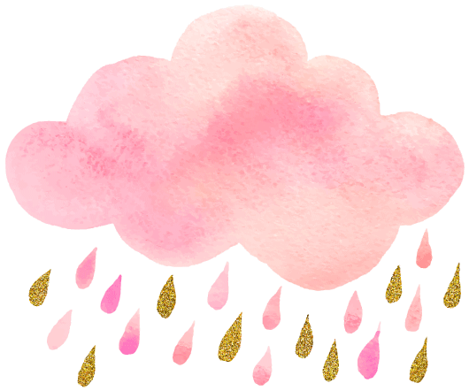
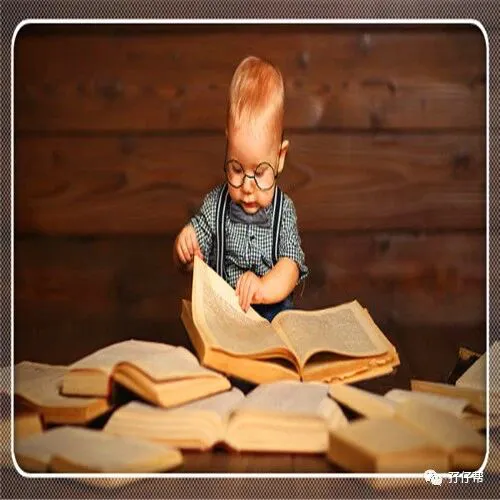
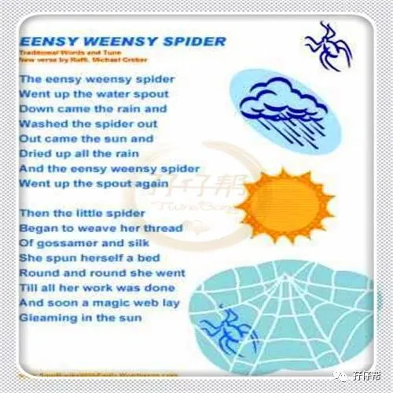
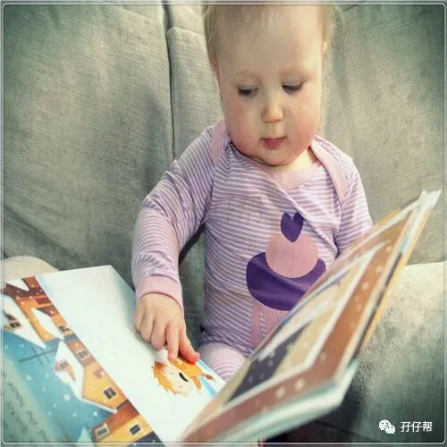
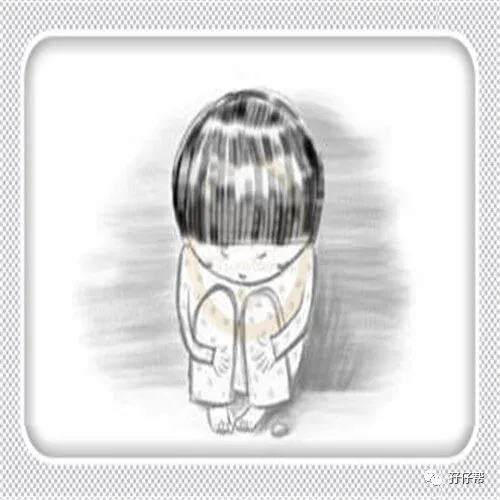
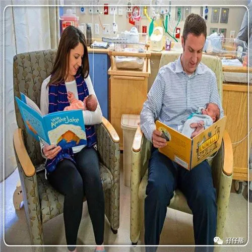
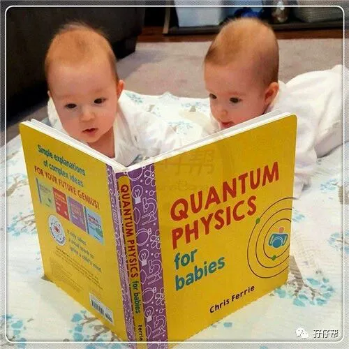
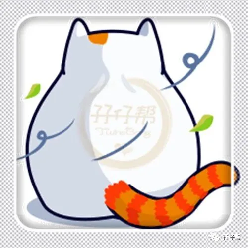
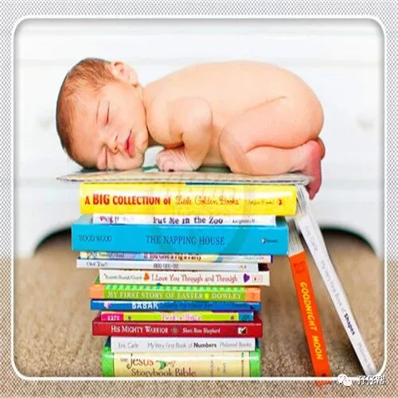
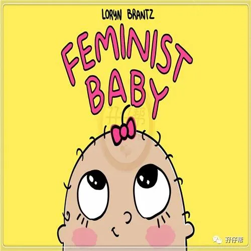
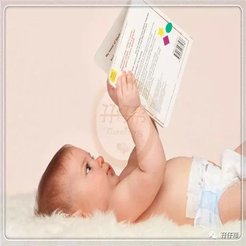
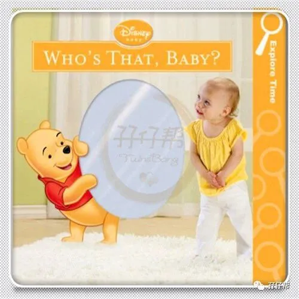
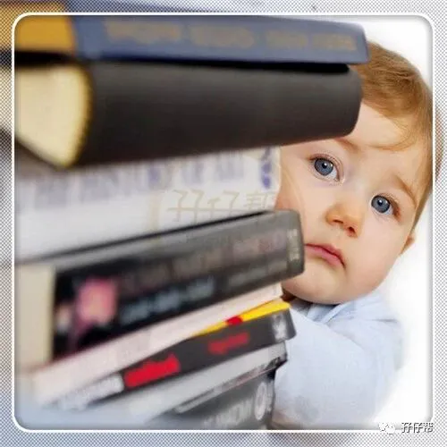

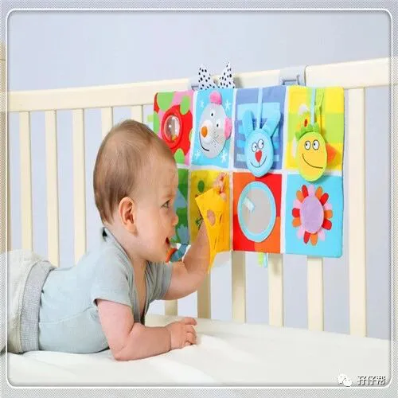
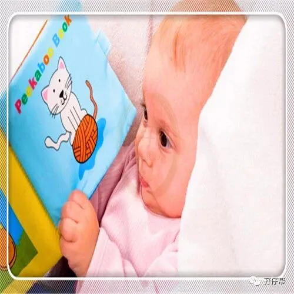
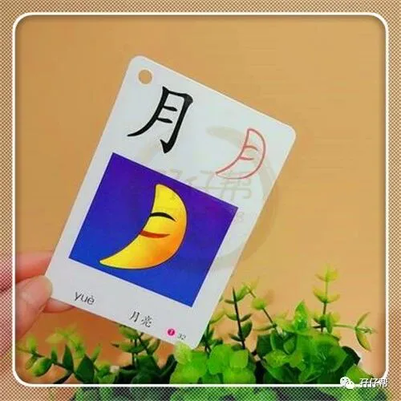
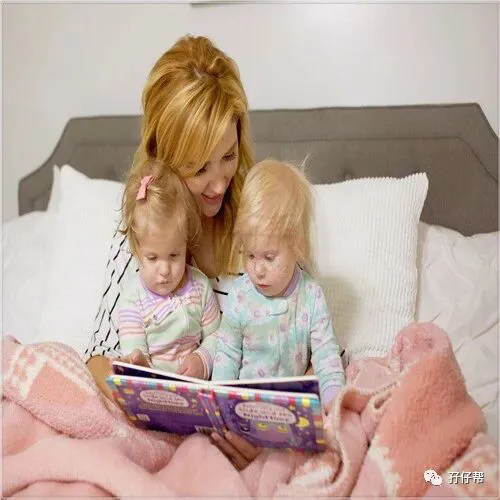